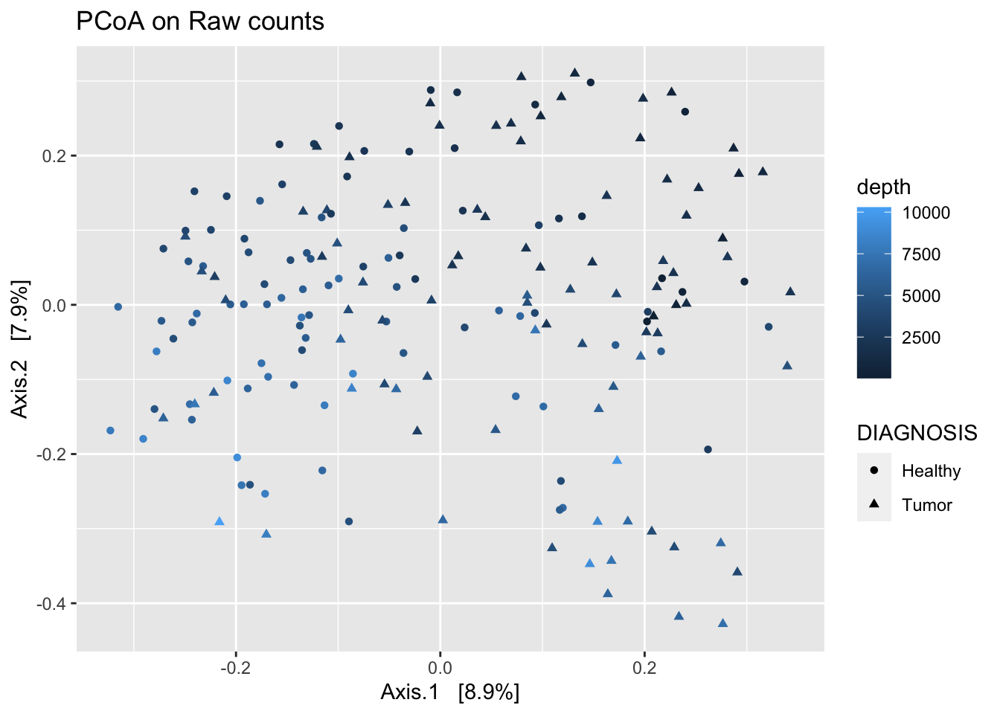

Chapter 2 Importing Data
There are multiple publicly available pre-compiled microbiome data sets of feature tables. These data sets begin after the bioinformatics pipeline and are matrices of counts of OTUs per sample. These data sets can exist as phyloseq objects, a popular R package for microbiome analysis (McMurdie and Holmes 2013), or as separate tables of feature counts and metadata. For this tutorial, we will provide code that assumes a phyloseq object as input, and outputs a normalized phyloseq object. Converting between separate tables and phyloseq objects is straightforward using the otu_table(), sample_data(), taxa_table(), and phyloseq() functions. For more information on the phyloseq package, see https://joey711.github.io/phyloseq/. In this tutorial we will use two data sets that are included in the phyloseq package.
2.1 Global Patterns
The Global Patterns dataset (Caporaso et al. 2011) is a dataset available in the phyloseq package. These data contain samples from 25 different environmental samples and mock communities. The sampling depth of these samples averages 3.1 million total counts. We will use this dataset to work through the different normalization methods.
The following lines load the relevant packages and data.
library(tidyverse)
library(phyloseq)
data("GlobalPatterns")
# examine phyloseq object
GlobalPatterns## phyloseq-class experiment-level object
## otu_table() OTU Table: [ 19216 taxa and 26 samples ]
## sample_data() Sample Data: [ 26 samples by 7 sample variables ]
## tax_table() Taxonomy Table: [ 19216 taxa by 7 taxonomic ranks ]
## phy_tree() Phylogenetic Tree: [ 19216 tips and 19215 internal nodes ]2.2 Colorectal cancer
Another publicly available dataset is from a study on colorectal cancer (Kostic et al. 2012). See the abstract of this study below:
The tumor microenvironment of colorectal carcinoma is a complex community of genomically altered cancer cells, nonneoplastic cells, and a diverse collection of microorganisms. Each of these components may contribute to carcinogenesis; however, the role of the microbiota is the least well understood. We have characterized the composition of the microbiota in colorectal carcinoma using whole genome sequences from nine tumor/normal pairs. Fusobacterium sequences were enriched in carcinomas, confirmed by quantitative PCR and 16S rDNA sequence analysis of 95 carcinoma/normal DNA pairs, while the Bacteroidetes and Firmicutes phyla were depleted in tumors. Fusobacteria were also visualized within colorectal tumors using FISH. These findings reveal alterations in the colorectal cancer microbiota; however, the precise role of Fusobacteria in colorectal carcinoma pathogenesis requires further investigation.
This dataset is downloaded with the phyloseq package as a .biom file and can be loaded in using the following code, showing how to load qiime files as phyloseq objects. These data contain observations from 2505 taxa across 185 samples, which are categorized as ‘Tumor’ or ‘Healthy’. We remove samples that are not categorized into these two categories.
# Load the data from a system file that is downloaded if the phyloseq package is installed
filepath <- system.file("extdata", "study_1457_split_library_seqs_and_mapping.zip", package="phyloseq")
kostic <- microbio_me_qiime(filepath)## Found biom-format file, now parsing it...
## Done parsing biom...
## Importing Sample Metdadata from mapping file...
## Merging the imported objects...
## Successfully merged, phyloseq-class created.
## Returning...# Some samples are labeled as "none" as a dignosis; remove these samples.
# Save as an object with the un-normalized counts
k_raw <- subset_samples(kostic, DIAGNOSIS != "None")
k_raw## phyloseq-class experiment-level object
## otu_table() OTU Table: [ 2505 taxa and 185 samples ]
## sample_data() Sample Data: [ 185 samples by 71 sample variables ]
## tax_table() Taxonomy Table: [ 2505 taxa by 7 taxonomic ranks ]2.3 Pre-processing Quality Control and Filtering
In addition to normalization, there are some steps we can perform that ideally remove technical artifacts from the sequencing process that only introduce noise.
These filtering steps commonly consist of filtering out samples with a low total read depth and filtering out taxa that are rarely abundant.
Let’s create a filtered version of the Global Patterns dataset. Note that there are only 26 samples, and all have a large library size, so we will not filter out any samples here.
For taxa filtering, we will remove taxa that appear fewer than 5 times in more than half the samples.
# Determine which taxa to remove
filter_taxa <- genefilter_sample(GlobalPatterns,
filterfun_sample(function(x) x > 5),
A=0.5*nsamples(GlobalPatterns))
# Remove those taxa from the GlobalPatterns dataset
# Save as an object with the un-normalized counts
gp_raw <- prune_taxa(filter_taxa, GlobalPatterns)
gp_raw## phyloseq-class experiment-level object
## otu_table() OTU Table: [ 219 taxa and 26 samples ]
## sample_data() Sample Data: [ 26 samples by 7 sample variables ]
## tax_table() Taxonomy Table: [ 219 taxa by 7 taxonomic ranks ]
## phy_tree() Phylogenetic Tree: [ 219 tips and 218 internal nodes ]This decreases the number of taxa from 19216 to 219. This is not surprising, because this dataset contains samples from widely different locations (gut, soil, etc), and few taxa are shared among all samples and locations. One potential problem with this approach is the widely different locations, so it is possible that the remaining taxa could be some technical artifact, or could be a general ‘core’ set of taxa shared across the disparate environments.
Additionally, let us save the total sampling depth as the variable depth in the metadata for the Global Patterns dataset.
We can visualize technical artifacts of sapling depth is by looking at principal coordinates plots using the Bray-Curtis dissimilarity, coloring by sampling depth too see how much variation can be explained by the original sampling depth.
gp_raw_dist <- phyloseq::ordinate(gp_raw, "PCoA", "bray")
plot_ordination(gp_raw,
gp_raw_dist,
color = "depth",
title = "PCoA on Raw counts")
We don’t see any extreme patterns with sampling depth, but this might additionally be due to the differences in different locations might have different sampling depths. This comparison might be more interesting when we only have one location we are sampling from.
Repeat this same process for the kostic data. Use a prevalence filter to only include taxa that have nonzero counts in over 10% of samples. This results in 478 taxa across 185 samples.
# Prevalence filter
prevalenceThreshold <- 0.10 * nsamples(k_raw)
toKeep <- apply(data.frame(otu_table(k_raw)), 1, function(taxa)
return(sum(taxa > 0) > prevalenceThreshold))
k_raw <- prune_taxa(toKeep, k_raw)
k_raw## phyloseq-class experiment-level object
## otu_table() OTU Table: [ 478 taxa and 185 samples ]
## sample_data() Sample Data: [ 185 samples by 71 sample variables ]
## tax_table() Taxonomy Table: [ 478 taxa by 7 taxonomic ranks ]# Save sampling depth as a sample variable
k_raw@sam_data$depth <- sample_sums(k_raw)
k_raw_dist <- phyloseq::ordinate(k_raw, "PCoA", "bray")
plot_ordination(k_raw,
k_raw_dist,
color = "depth",
shape = "DIAGNOSIS",
title = "PCoA on Raw counts")
When considering a normalization method, it is important to know if between sample (DA methods) or within sample (community) analysis is of interest.
References
Caporaso, J. Gregory, Christian L. Lauber, William A. Walters, Donna Berg-Lyons, Catherine A. Lozupone, Peter J. Turnbaugh, Noah Fierer, and Rob Knight. 2011. “Global Patterns of 16S rRNA Diversity at a Depth of Millions of Sequences Per Sample.” Proceedings of the National Academy of Sciences 108 (Supplement 1): 4516–22. https://doi.org/10.1073/pnas.1000080107.
Kostic, Aleksandar D., Dirk Gevers, Chandra Sekhar Pedamallu, Monia Michaud, Fujiko Duke, Ashlee M. Earl, Akinyemi I. Ojesina, et al. 2012. “Genomic Analysis Identifies Association of Fusobacterium with Colorectal Carcinoma.” Genome Research 22 (2): 292–98. https://doi.org/10.1101/gr.126573.111.
McMurdie, Paul J., and Susan Holmes. 2013. “Phyloseq: An R Package for Reproducible Interactive Analysis and Graphics of Microbiome Census Data.” PLOS ONE 8 (4): e61217. https://doi.org/10.1371/journal.pone.0061217.